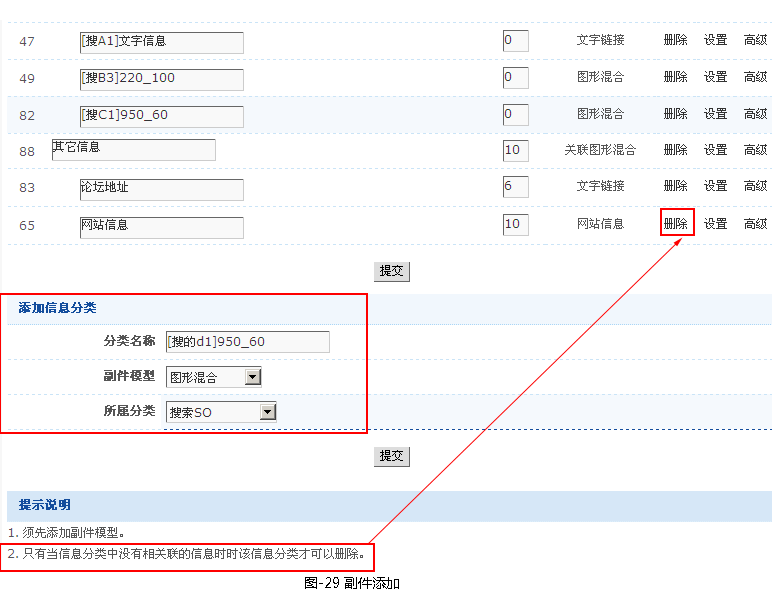
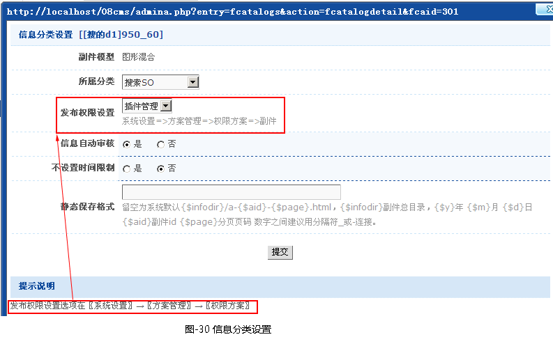
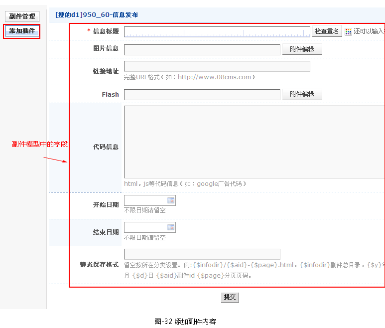

副件管理
一、前言
副件管理主要用来管理广告、友情链接、一些附属信息。
二、副件分类
- 2.1添加副件分类
-
1.添加副件分类之前，先添加好所需的副件模型（已在模型管理中讲述）。
2. 点击网站架构->副件架构->副件分类->添加信息分类，如图-29所示。

a. 分类名称：可以随意填写
b. 副件模型：选择你添加的文档的模型
c. 所属分类：即层次结构排列设定
3.提交添加按钮，就在信息分类管理列表中找到用户刚添加好的副件分类，点击相应的设置链接，弹出信息分类设置的窗口，如图-30所示。

a.发布权限设置：选择一个权限方案选项，设置副件发布本权限。
b.信息自动审核：在发布的同时是否立即审核通过。
c.是否设置时间限制：是否在控制副件文档发布时间，如选是即当时间超过设定时间时副件文档失效，不会在前后显示。
- 2.2设置副件内容
-
1.点击〖系统设置〗->〖管理后台〗->〖管理节点〗->〖副件内容区〗->管理链接，就会弹出副件内容区节点设置。
2.设置副件内容区节点，找到刚才添加好的副件分类，如图-31所示。

- 2.3添加副件内容内容
-
设置好以上步骤后，就可到副件管理区，刷新左侧栏，找到您所添加副件分类，点击添加插件，如图-32所示。

- 2.4添加副件的复合标识
- 添加完数据后，就需调用数据到前端，就需创建副件标识（这个就不详细说明请到标识章阅读）